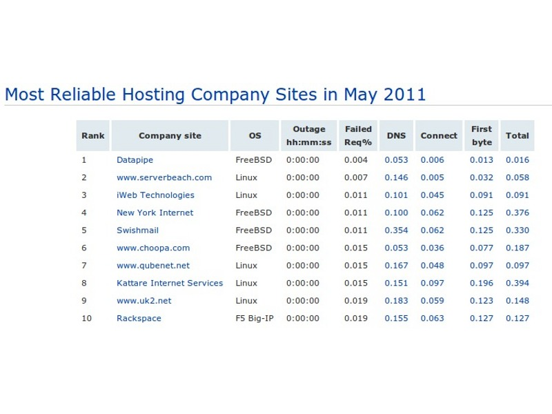
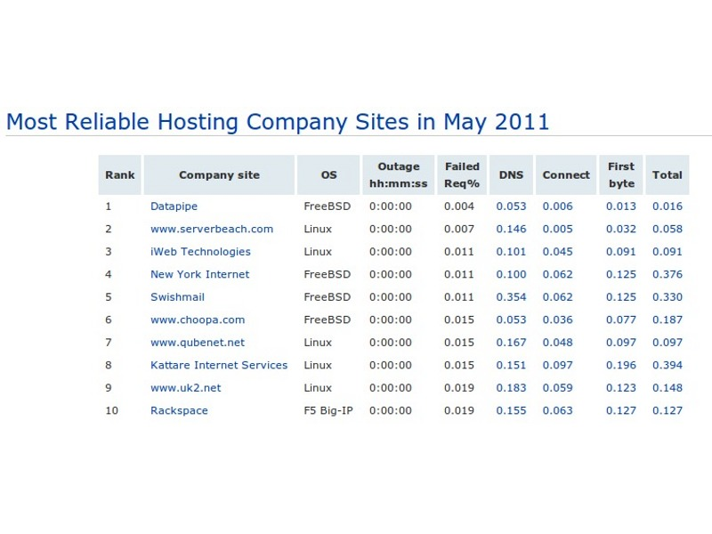

guifi.net
Servidores GNU/Linux
Instalación de servicios en guifi.net bajo plataforma GNU/Linux.
Apreta la tecla → para avanzar.

Evolución de la red en Castellón
Mapa de la evolución de los nodos y supernodos en Castellón:
Actualmente en Castellón hay 271 1012 1266 nodos activos y 175 363 470 proyectados.
¿Por qué GNU/Linux para mi servidor?
- S.O. muy versátil.
- Comunidad de usuarios implicada en su desarrollo.
- Todo tipo de software open-source a nuestra disposicion.
El gran dilema: Mikrotik vs Linux
- Depende de factores tan variados como el tipo de montaje o nuestras convicciones personales.
 


¿Ventaja o hándicap?
- Amplia variedad de distribuciones empaquetan Linux.
- Comparten características comunes.
- Se distancian entre ellas lo suficiente.
¿Cuál elegir?
- Aquella con la que nos sintamos más cómodos
Tenemos una extensa lista de posibilidades a la hora de elegir un hardware para una plataforma Linux:
- Cualquier PC genérico es capaz de funcionar con Linux.
- Según necesidades concretas podremos optar por hardware más específico.
- Bajo consumo, bajo coste, redundancia de datos, alto rendimiento, etc.
- Dominar al 100% lo que os voy a contar es imposible, no quiero que os frustréis.
- Tocamos muchos ámbitos de la informática: redes, sistemas, servicios, aplicaciones.
- Todo lo que os voy a contar lo podéis montar vosotros con tiempo, paciencia y motivación.
- Las búsquedas en Google ahorran mucho tiempo.
- Para cualquier duda que os surja una vez terminado el curso: david.rubert@gmail.com.

Webmin
Administración Linux vía web.
Pulsa → para continuar.
Webmin es una herramienta para la administración de varias secciones de un sistema Linux vía web, evitando la complejidad de la línea de comandos.
- No nos evita tener que conocer en profundidad el sistema o los servicios.
- Nos facilita el no tener que pegarnos con archivos de configuración diferentes.
- Podemos crear roles y delegar la administración de servicios de manera sencilla.
Dependiendo de nuestra distribución Linux, podremos instalar de paquete o si queremos de fuentes. Veamos las características:
- Lleva embebido un servidor web propio.
- Arrancará como servicio y escuchará un puerto no estándar (10000).
Archivo miniserv.conf
port=10000
allow=127.0.0.1 192.168.1.0/24
userfile=/etc/webmin/miniserv.users
Una de las características más útiles de Webmin es la posibilidad de asignar permisos sobre un determinado servicio a un usuario.
- Accederíamos a la sección de gestión de Webmin, y de ahí a la gestión de usuarios.
- Podemos delegar cualquier apartado de gestión vía web a un usuario.
Por defecto, Webmin lleva módulos para gestionar una buena cantidad de servicios, pero es extensible y podemos instalarle módulos de gestión de servicios que no venga en la distribución por defecto.
- Módulos de terceros:
- http://www.webmin.com/third.html
Desde un navegador web, acceded a esta URL:
Squid
Servidor proxy
Pulsa → para continuar.
¿Qué es un servidor proxy?
- Programa que realiza una acción en representación de otro.
- Utilidad más común: Dar acceso web a los clientes.
- Proxy caché.
- Proxy transparente.
- Proxy web (puertos 80/443).

Todos los navegadores soportan el acceso a la WWW a través de un servidor proxy, y tienen un apartado de su configuración habilitado para ello.
- Permiten configurar un servidor proxy para acceso al puerto 80, el puerto SSL (443), el FTP o cualquier otro vía SOCKS.
- Utilidad más común: Dar acceso web a los clientes.
- Proxy caché.
- Proxy transparente.
Toda la configuración se gestiona a través del archivo squid.conf.
- Puerto de escucha.
- Control de acceso a puertos.
- Control de acceso por IP's.
- Control de acceso por usuarios.
- Limitación de ancho de banda.
- Exclusión de determinados dominios de la navegación.
Nos proporcionan una versión comentada de squid.conf donde se especifica qué hace cada directiva.
Veamos algunos ejemplos:
- Puerto de escucha de Squid
http_port 10.228.144.163:3128
- Control de acceso a una subred a través de ACL's:
acl ip_acl src 192.168.1.0/24
http_access allow ip_acl
http_access deny all
- Control de acceso a puertos
acl SSL_ports port 443
acl Safe_ports port 80 # http
acl Safe_ports port 21 # ftp
acl Safe_ports port 443 # https
acl Safe_ports port 70 # gopher
acl Safe_ports port 210 # wais
acl Safe_ports port 1025-65535 # unregistered ports
acl Safe_ports port 280 # http-mgmt
acl Safe_ports port 488 # gss-http
acl Safe_ports port 591 # filemaker
acl Safe_ports port 777 # multiling http
acl CONNECT method CONNECT
# Deny requests to certain unsafe ports
http_access deny !Safe_ports
# Deny CONNECT to other than secure SSL ports
http_access deny CONNECT !SSL_ports
Los logs de Squid nos dan información relativa a los usuarios que se conectan a nuestro proxy, con lo que podemos realizar más fácilmente labores de mantenimiento o diágnostico.
- Archivo: access.log.
- El archivo de log suele ser bastante ilegible de por sí.
- Para entender algo: analizador de log Sarge.
access_log /var/log/squid/access.log squid
Guifi.net nos propone un modelo federado de autenticación de usuarios.
- Los usuarios se dan de alta en la web de guifi.net con usuario nombre.apellido.
- Los instaladores/administradores de zona aprueban los usuarios
- Con el usuario registrado, pueden acceder a todos aquellos proxies que formen parte de la federación.
- El administrador de proxy no tiene que hacer nada.

Esta es la configuración principal de Squid para hacer funcionar un proxy federado.
acl SSL_ports port 443
acl Safe_ports port 80 # http
acl Safe_ports port 443 # https
acl CONNECT method CONNECT
# Autenticacio
auth_param basic program /usr/libexec/ncsa_auth /etc/squid/guifinet_passwd
acl usuaris proxy_auth REQUIRED
# Blocked domains
acl blockeddomain dstdomain "/etc/squid/blocked.domains.acl"
# Access priority
http_access deny CONNECT !SSL_ports
http_access deny !Safe_ports
http_access deny blockeddomain
http_access allow usuaris
http_access deny all
Descargaremos cada X minutos la lista de usuarios autorizados en los proxies federados, y recargaremos la configuración de Squid.
#!/bin/bash
PROXY_ID=31803
TMP=$(mktemp)
/bin/wget --timeout=240 http://www.guifi.net/es/node/$PROXY_ID/view/federated -qO $TMP
/bin/touch /etc/squid/guifinet_passwd
OK=`/bin/cat $TMP|wc -l`
NEW=`/usr/bin/diff /etc/squid/guifinet_passwd $TMP|wc -l`
if [ $OK != "0" ]; then
if [ $NEW != "0" ]; then
/bin/cp $TMP /etc/squid/guifinet_passwd
/etc/init.d/squid reload
fi;
fi;
rm -f $TMP
Una vez comprendido el modelo de control de accesos de Squid, podemos fácilmente habilitar la autenticación de usuarios desde Webmin, y permitir de una persona administre el alta/baja de usuarios.
- Activaremos la autenticación básica de usuarios.
- Añadiremos un ACL de autenticación externa.
- Pondremos el ACL en la posición que le corresponda para permitir acceso a nuestros usuarios.
- Daremos de alta usuarios desde la gestión.